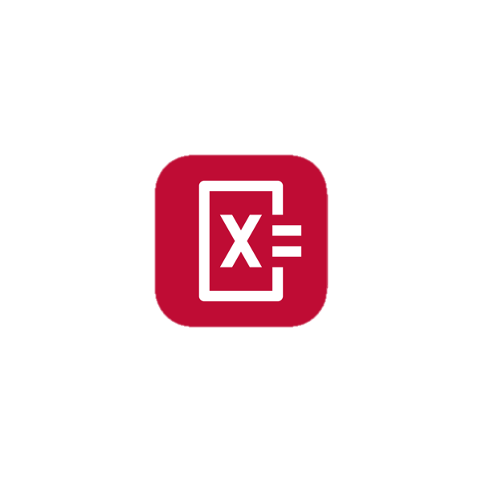
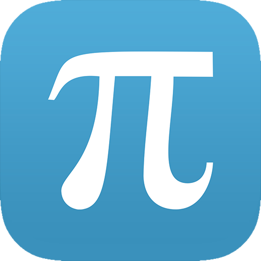
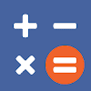

Photomath
Topics Covered:
Math problems: Basic Math, Algebra, Geometery, Trigonometry, Statistics, Calculus
- Can read and solve problems immediately by the use of your device camera. They can be handrwtten and printed.
- Provides detailed explanations and clear instructions on how to go about each math problem.
- Displays appealing animated calculation steps just like a teacher in an actual classroom
- Helps you learn and understand fundumental math topics,but makes it less stressful and less daunting
- It is decked with graphs to further visualize problems as well as an intuitive math keyboard.
- Works without wifi or data :)
Desmos Graphing Calculator
Topics Covered:
All Graphing including Statistics,Inequalities & Calculus
- Allows you to plot many different functions and graph as many expressions as you like at once.
- You can create tables, add sliders and animate your graphs at any parameter.
- Displays appealing animated calculation steps just like a teacher in an catual classroom
- Zoom in on graphs to observe more precisely and tap on a point of interest to view its specifics in detail.
- It includes an advanced scientific calculator
- Works without wifi or data :)
- Provides examples of different parabolas, lines, conic sections, parametics, polars, transformations & lists.

Imathematics
Topics Covered:
All Concepts
- It is your personal math tutor and helps you learn over 70 math topics free.
- Helps you revise formulas, theoroms and definitions with simple explanations.
- Practice with various interactive calculators.
- Find specific topics quickly with great search algorithm.
- It includes an advanced calculator, fraction approximater and equation solver.
- Works without wifi or data :)

Clevcalc
Topics Covered:
Basic operations,square,expression's parenthesis, and trigonometric and logarithmic functions.
- Can solve a range of different calculations,used in everyday life with a single application.
- Simple and fast , clean interface.
- Contains so many other useful calculators as well, such as a unit convertor and BMI calculator
- Saves user history.